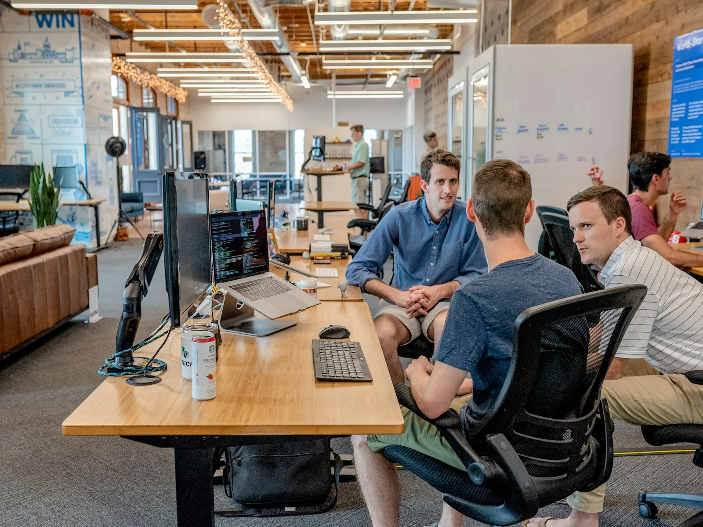

Build points. Watch the draw.
- CRS score and language results
- Education and ECA
- FSW · CEC · FST
- Work experience
- Category options
Polar Precision · Edition 07
A precise, human route through Express Entry, PNP, work, study, family and complex immigration decisions.
01 / Goal index
Oversized numbers keep the decision visible. Choose the route that best describes the question in front of you.
Federal profile, CRS strategy and permanent residence planning.
02Compare province and stream questions before choosing.
03Employer-specific, open permits, LMIA and restoration.
04Study, school and post-graduation planning.
05Spousal, parent, grandparent and child routes.
06Review, identify, respond and refer where appropriate.

02 / Professional precision
Sanjay Singh Kumar is Principal Consultant at Commonwealth Migration Canada. The team brings a practical, regulated perspective to permanent residence, temporary status, employer, family and refusal files.
Licensed RCIC registration reference from the original site.
Years of team experience across GTA, Ontario and Canada-wide files.
English, Punjabi, Hindi and Urdu support.
03 / Comparison grid
There is no universal route. Your occupation, language, education, experience, ties and current criteria matter.
04 / Service index
Express Entry, FSW, CEC, FST, CRS strategy, category draws and PNP connections.
Work permits, LMIA, study permits, DLI choice, PGWP, visitor and Super Visa planning.
Spousal, partner, parent, grandparent, dependent-child sponsorship, PR cards and citizenship.
LMIA, Global Talent Stream, agricultural LMIA, recruitment and ESDC compliance.
Visitor, study, sponsorship refusals, PFL, GCMS analysis, reapplication and referrals.
05 / Directional interface
Use an assessment conversation to organise language, education, experience and goals. This interface is illustrative only.
Not an IRCC result or eligibility decision.
“The guidance made the steps feel organised and manageable.”Desai Akshi · Express Entry · Toronto
“The study permit process was explained clearly from the beginning.”Cayne Santana · Study Permit · International Student
06 / Tools
You share the goal, relevant background and immediate question. The team helps frame the pathway and next documents.
The team reviews refusal reasons, GCMS notes and PFLs, then discusses response, reapplication or referral options as appropriate.
07 / Final red rule
Book a consultation with Commonwealth Migration Canada.
Book a Consultation →